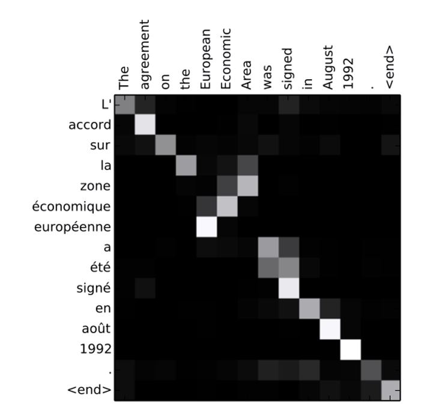

Week 7: Attention
Week 7: Attention
Overview. Week 6 ended on a bottleneck. In an encoder-decoder model, everything the decoder knows about the input sentence has to pass through one fixed-length context vector \bm{c}, the encoder’s final hidden state, however long the sentence is. This week builds the mechanism that removes that bottleneck: attention, which lets a model look up the parts of its input it needs at each step. We motivate attention as the neural-network version of a key-value store and name the five ingredients every attention mechanism specifies. We then see three instances of that template: a Python dictionary, a soft version of the nearest-neighbour classifier, and attention inside a sequence-to-sequence recurrent network. From there we reach self-attention, the core operation of the transformer. We look at why it is attractive (a short path between any two positions, and full parallelism), write it as two matrix multiplications, deal with its blindness to word order using position encodings, and close with multi-headed self-attention. The softmax of Week 1, the embeddings and recurrent networks of Week 6, and the receptive fields of Week 5 all return in new roles.
Attention as an Associative Memory
How does a program retrieve a stored item when it knows only an identifier for it? A fairly fundamental data structure answers this: the associative memory, or key-value store. Attention is, loosely, the neural-network version of it. See associative array.
Building one takes a few pieces.
- The objects we want to store are the values. They form a set, so they have no order.
- Each value has a key, an identifier for it. There is exactly one key per value.
- To retrieve something, we supply a query, an identifier of the thing we want back.
Retrieval then uses two functions. A comparison function takes the query and one key and says how well they match. A reduction function takes all those match results together with the stored values and returns something built from the values.
Definition. An attention mechanism is specified by five ingredients: a query, a set of keys, a set of values (one value per key), a comparison function that scores the query against each key, and a reduction function that combines the values according to those scores. See attention (machine learning).
The first instance: a Python dictionary
A Python dictionary is a key-value store we already use. Its comparison function tests whether the query equals a key. In practice it compares hashes of the query and the keys, which is equality with very high probability rather than exactly. Because the keys are unique, at most one key matches. The reduction function returns the value stored under that key.
We could imagine implementing a dictionary as a set of (key, value) pairs: compare the query to the first entry of every pair, find the pair whose key matches, and return its second entry. Real dictionaries are not built this way, but it captures the behaviour.
Could we put a dictionary inside a neural network and train through it? No. Its decisions are hard: a key either equals the query or it does not, and exactly one value comes back. A tiny change to the query either changes nothing or switches the output abruptly, so the output has no useful derivative with respect to the query. Over this lecture we make that behaviour soft, so it is differentiable and can serve as a layer trained by backpropagation.
The abstract picture
Every attention mechanism has the same shape. The comparison function is applied to the query and each key in turn, giving one score per key that says how well that key matches. The reduction function then combines the values, weighted by those scores. A reduction maps a set of things to a single thing (a maximum, a sum, and an average are all reductions), so the output has the size of one value.
In symbols, there are N keys \bm{k}_i \in \mathbb{R}^{d_k}, i = 1, \dots, N, and one value \bm{v}_i \in \mathbb{R}^{d_v} per key. The query is \bm{q} \in \mathbb{R}^{d_q}; in many mechanisms d_q = d_k, though the comparison function can allow them to differ. The comparison function \alpha takes the query and one key and returns a scalar score:
a_i = \alpha(\bm{q}, \bm{k}_i) \in \mathbb{R}, \qquad \bm{a} = (a_1, \dots, a_N) \in \mathbb{R}^N.
The reduction function f takes the values and the vector of scores and returns one vector the size of a value:
f(\{\bm{v}_1, \dots, \bm{v}_N\}, \bm{a}) \in \mathbb{R}^{d_v}.
Here \alpha names the comparison function and a_i the score it outputs; the shorthand a_t from Week 6’s backpropagation-through-time derivation is unrelated.
For the dictionary, the comparison outputs a_i = 1 when \bm{q} equals \bm{k}_i and 0 otherwise, so \bm{a} is a one-hot vector marking the match, and the reduction returns the value at the position of the 1.
Attention operates on sets
We will often draw the keys and values as the rows of a matrix, but nothing in the mechanism uses their order. The comparison treats each key on its own, and a weighted sum does not care in which order its terms are added. So if we shuffle the (key, value) pairs, keeping each value with its own key, the output is unchanged.
Definition. A function of a collection is permutation invariant if reordering the collection leaves its output unchanged. A permutation is a reordering. Attention is permutation invariant in its (key, value) pairs.
A dictionary has the same property: its keys and values have no inherent order. This becomes a problem when we apply attention to sequences, whose order matters, and we return to it in Position Encoding.
A Soft One-Nearest-Neighbour Classifier
To move from dictionaries toward attention we can put inside a network, the lecture uses a classifier that is not usually described as attention but has exactly the same parts.
Prerequisite: the nearest-neighbour classifier
Definition. A k-nearest-neighbour classifier labels a new data point by finding the k training points closest to it and taking a majority vote of their labels. With k = 1 it simply copies the label of the single closest training point. Closeness is usually measured by Euclidean distance, \lVert \bm{q} - \bm{k} \rVert = \sqrt{\sum_l (q_l - k_l)^2}. See k-nearest neighbors algorithm.
There is no training step in the usual sense: the classifier stores the training set and searches it at prediction time. (The k in “k-nearest” is a count of neighbours, not a key; from here on we use only k = 1.)
The one-nearest-neighbour classifier as attention
Fill in the five ingredients.
- The query is the data point we want to classify.
- The keys are the training points, since those are what we compare the query to.
- The values are the training labels, one per training point, since a label is what we want back.
- The comparison function is the negative Euclidean distance. The minus sign makes the closest point the one with the largest score:
\alpha(\bm{q}, \bm{k}_i) = -\lVert \bm{q} - \bm{k}_i \rVert = a_i.
- The reduction function returns the label of the highest-scoring point. Using the argmax, treated as returning a one-hot vector with a 1 at the largest score, we pick out that label.
To make “pick out the label” a formula, write each label as a one-hot vector over the classes, as in Week 1, and stack them into a matrix \bm{Y} whose row i is the label of training point i. Then
f(\{\bm{v}_1, \dots, \bm{v}_N\}, \bm{a}) = \operatorname{argmax}(\bm{a})^\top \bm{Y}.
The one-hot argmax selects row i^\star of \bm{Y}, the label of the closest training point. We use \bm{Y} for the label matrix because V already means the vocabulary from Week 6, and later this week it will mean the value matrix.
Making it soft
We would not put this classifier in a network as written: the argmax has a derivative of zero almost everywhere, so no gradient reaches the query. But we have met a smooth function that does roughly what argmax does. The softmax of Week 1 turns scores into non-negative weights that sum to one, with most of the weight on the largest score; it is better thought of as a soft argmax.
To make the one-nearest-neighbour classifier soft (differentiable), replace \operatorname{argmax} with \operatorname{softmax}: f(\{\bm{v}_1, \dots, \bm{v}_N\}, \bm{a}) = \operatorname{softmax}(\bm{a})^\top \bm{Y}.
Strictly, this is no longer a one-nearest-neighbour classifier. It averages the labels of all training points, each weighted by how close it is to the query. Because the labels are one-hot vectors, a weighted average of them is a vector of non-negative numbers summing to one: a probability for each class. Averaging the integer class indices instead would not mean anything (the average of class 1 and class 3 is not class 2), which is why the labels are written as one-hot vectors here.
Worked example. Take three one-dimensional training points k_1 = 1, k_2 = 3, k_3 = 6 with labels A, B, B, written as one-hot vectors [1, 0], [0, 1], [0, 1]. Classify the query q = 2.5.
- Compare. The distances are 1.5, 0.5, 3.5, so the scores are \bm{a} = (-1.5, -0.5, -3.5).
- Hard reduction. The argmax is point 2, so the one-nearest-neighbour classifier outputs label B, [0, 1].
- Soft reduction. e^{-1.5} \approx 0.223, e^{-0.5} \approx 0.607, e^{-3.5} \approx 0.030, summing to 0.860. The softmax weights are (0.260, 0.705, 0.035).
- Weighted average of labels. 0.260\,[1, 0] + 0.705\,[0, 1] + 0.035\,[0, 1] = [0.260, 0.740].
The soft classifier agrees with the hard one (B is more probable) but also reports that A is not far away. If q moves slightly, these probabilities change slightly, which is what lets a gradient flow through.
The attention mechanisms we build into networks look much like this soft classifier, with a different comparison function and with values that are vectors other than labels. Expressing a nearest-neighbour classifier as attention is not an obvious step; the lecture notes it has appeared both as a job-interview question and as a final-exam question.
Sequence-to-Sequence with Attention
Attention first appeared widely inside sequence-to-sequence models, so we stay with recurrent networks a little longer. Recall from Week 6 the encoder-decoder RNN: an encoder RNN reads the input \bm{x}_1, \dots, \bm{x}_T into hidden states \bm{h}_1, \dots, \bm{h}_T; its final state becomes the context \bm{c} = \bm{h}_T; and a decoder RNN with states \bm{s}_{t'} generates the output \bm{y}_1, \bm{y}_2, \dots autoregressively from \bm{c}. As in Week 6, t' counts output positions and t counts input positions.
The bottleneck
If \bm{c} = \bm{h}_T, then \bm{h}_T must encode everything relevant about the input, because the decoder’s only access to the input is through \bm{c}. For a long input we are forcing more and more information into one fixed-length vector, and compressing all the relevant information (while discarding the irrelevant) into a single vector is hard.
The lecture’s example shows why this is wasteful. Translating the English “the cat sat on the mat” into the French “le chat s’est assis sur le tapis,” the word tapis is the translation of mat. To produce tapis we essentially need only the word mat, not the rest of the sentence. Yet with a single context, every output step must rely on the same \bm{h}_T, whether or not that output depends on the whole input.
The idea is to compute a different context \bm{c}_{t'} at each output step t', recomputed according to what we are about to predict, so that the context for producing tapis concentrates on the encoder state for mat. We build \bm{c}_{t'} with an attention mechanism (Bahdanau et al. 2015).
The five ingredients
- The query is the decoder’s previous hidden state, \bm{s}_{t'-1}. We cannot use \bm{s}_{t'}, because computing it requires the context \bm{c}_{t'} we are trying to build.
- The values are the encoder states \bm{h}_1, \dots, \bm{h}_T, since the context should be built from them.
- The keys are also the encoder states \bm{h}_1, \dots, \bm{h}_T. They are the only T things the encoder gives us to compare the query against, so the same vectors serve as both keys and values.
- The comparison function, in the original model, is a small multi-layer perceptron (Week 2). The decoder state and the encoder states come from different RNNs and need not be directly comparable, so we map each through its own learned linear transformation, add the results, apply a \tanh, and collapse to a scalar with a learned weight vector:
a_i = \alpha(\bm{s}_{t'-1}, \bm{h}_i) = \bm{w}^\top \tanh\!\big(\bm{W}_q\, \bm{s}_{t'-1} + \bm{W}_k\, \bm{h}_i\big).
Here \bm{W}_q, \bm{W}_k, and \bm{w} are learned. (The lecture writes the last one as \bm{w}_v; it is an ordinary weight vector and has nothing to do with the values.) Because the transformed query and key are added, this comparison is often called additive attention. The design is heuristic: since the two kinds of state might not be directly comparable, a small network is given the job of learning a useful measure of how well they match.
- The reduction function is the softmax-weighted average from the soft classifier:
\bm{c}_{t'} = \sum_{i=1}^{T} \operatorname{softmax}(\bm{a})_i \, \bm{h}_i.
The softmax weights are non-negative and sum to one, so \bm{c}_{t'} is an average of the encoder states, weighted by how well each one matches what the decoder is about to produce. These weights are the attention weights for step t'.
The per-step context \bm{c}_{t'} is a third object written with the letter c: it differs from Week 6’s single context \bm{c} (which it replaces) and from the LSTM cell \bm{c}_t.
Feeding the context to the decoder
One change to the decoder is needed. In Week 6 the single context was used to initialize the decoder, or injected at every step. Now there is a different \bm{c}_{t'} at each step, so we pass it in as an extra input to the decoder update:
\bm{s}_{t'} = g(\bm{y}_{t'-1}, \bm{s}_{t'-1}, \bm{c}_{t'}),
for example by concatenating \bm{c}_{t'} with the embedding of the previous output element, as in Week 6’s first option.
This encoder-decoder RNN with attention is generally more effective for sequence-to-sequence tasks, because no single state has to hold everything about the input. A focused context is recomputed at each output step.
What the attention weights learn
If we plot the attention weights at each decoder step, we can see what the mechanism has learned. For translation the weights tend to concentrate on the input word being translated and move along the input as generation proceeds. They even reverse direction where the two languages order a phrase differently.

None of this alignment is programmed in. It is learned by gradient descent on the training data, which is possible only because every step of the mechanism (the small comparison network, the softmax, the weighted average) is differentiable.
Self-Attention
Sequence-to-sequence RNNs with attention work, but the attention mechanism that dominates today is self-attention, the core operation of the transformer (Vaswani et al. 2017). Self-attention plays the same role as a recurrent layer: it takes a sequence of inputs and produces a sequence of outputs of the same length, which can be fed to another layer. It does this mapping with an attention mechanism instead of a recurrence.
Definition. In self-attention, the queries, keys, and values all come from the same sequence, hence “self.” The input sequence is transformed three ways to produce queries, keys, and values, and these are used to produce an output sequence of the same length.
Queries, keys, and values from one sequence
Let the input sequence be \bm{x}_1, \dots, \bm{x}_T \in \mathbb{R}^m. It may be the model’s input (for text, the token embeddings of Week 6) or the output of an earlier layer. Each element is projected through three learned weight matrices, the same matrices at every position:
\bm{q}_t = \bm{W}_Q \bm{x}_t, \qquad \bm{k}_t = \bm{W}_K \bm{x}_t, \qquad \bm{v}_t = \bm{W}_V \bm{x}_t,
with \bm{W}_Q, \bm{W}_K \in \mathbb{R}^{d_k \times m} and \bm{W}_V \in \mathbb{R}^{d_v \times m}. That gives T queries, T keys, and T values: every position asks a question (its query), offers an identifier (its key), and offers content (its value). Reusing the same three matrices at every position is the same parameter sharing we saw for convolution kernels in Week 5 and recurrent weights in Week 6, so the number of parameters does not depend on T.
The comparison: a scaled dot product
The comparison function is about as simple as it could be: the dot product of a query with a key, divided by \sqrt{d_k}:
\alpha(\bm{q}, \bm{k}_i) = \frac{\bm{q}^\top \bm{k}_i}{\sqrt{d_k}}.
A dot product is large when two vectors point in similar directions. Because the query and key are different learned projections of the input, the network can learn what it means for one position to be relevant to another; “similar direction” is measured after those projections, not between the raw inputs. The query and key must have the same length d_k for the dot product to be defined.
The reduction function is the softmax-weighted average once more:
\text{output} = \sum_{i=1}^{T} \operatorname{softmax}(\bm{a})_i \, \bm{v}_i \in \mathbb{R}^{d_v}.
Doing this for each of the T queries gives T outputs, one per position. Where a recurrent layer produced a sequence of hidden states, self-attention produces a sequence of weighted averages of the projected inputs. This comparison and reduction together are often called scaled dot-product attention.
Prerequisite: why divide by the square root of the key length
Why \sqrt{d_k}, and why divide at all? The answer combines two facts: how large a dot product typically is, and what a softmax does with large scores.
The size of a dot product. Suppose the entries of \bm{q} and \bm{k} are independent, each with mean 0 and variance 1 (as with standard normal entries). Each product q_l k_l then has mean 0 and variance 1. The dot product \bm{q}^\top\bm{k} = \sum_{l=1}^{d_k} q_l k_l is a sum of d_k such independent terms, and the variance of a sum of independent terms is the sum of their variances:
\operatorname{Var}\!\big(\bm{q}^\top \bm{k}\big) = d_k, \qquad \operatorname{Var}\!\left(\frac{\bm{q}^\top \bm{k}}{\sqrt{d_k}}\right) = \frac{d_k}{d_k} = 1.
So the raw dot product has a standard deviation of \sqrt{d_k}, which grows with the key length, and dividing by \sqrt{d_k} brings it back to 1 whatever d_k is. This is the same style of argument as the weight initialization of Week 3, where a sum of n_\text{in} terms was kept at a steady variance by scaling the weights.
What large scores do to a softmax. A softmax whose scores have a large range puts almost all its weight on the largest one. This is called saturation, and a saturated softmax has nearly zero gradient, the vanishing-gradient problem of Week 3 in a new place.
Worked example. Compare the scores (2, 1, 0) with the same scores multiplied by 8, which is \sqrt{64}, the factor by which an unscaled dot product’s spread grows when d_k = 64.
- \operatorname{softmax}(2, 1, 0) \approx (0.665, 0.245, 0.090). Every position gets some weight.
- \operatorname{softmax}(16, 8, 0) \approx (0.99966, 0.00034, 0.0000001). Nearly a one-hot vector: the soft argmax has turned back into a hard one.
The derivative of the first softmax output with respect to its own score is p_1(1 - p_1). It is 0.665 \times 0.335 \approx 0.22 in the first case and 0.99966 \times 0.00034 \approx 0.0003 in the second, about 660 times smaller. Gradients through a saturated softmax barely reach the queries and keys.
Dividing by \sqrt{d_k} keeps the scores in the range where the softmax stays soft, which keeps gradients flowing.
A small self-attention computation
Worked example. Take the three-token sentence “the cat sat” from Week 6, and suppose the projections have produced keys of length d_k = 4 (so \sqrt{d_k} = 2) and values of length d_v = 2:
- “the”: \bm{k} = [1, 0, 0, 0], \bm{v} = [1, 0]
- “cat”: \bm{k} = [1, 1, 1, 1], \bm{v} = [0, 1]
- “sat”: \bm{k} = [1, 1, 0, 0], \bm{v} = [1, 1]
Compute the output at the position of “sat,” whose query is \bm{q} = [1, 1, 1, 1].
- Dot products with the three keys: 1, 4, 2.
- Scale by \sqrt{d_k} = 2: \bm{a} = (0.5, 2, 1).
- Softmax: e^{0.5} \approx 1.649, e^{2} \approx 7.389, e^{1} \approx 2.718, summing to 11.756, so the weights are (0.140, 0.629, 0.231).
- Weighted average of values: 0.140\,[1, 0] + 0.629\,[0, 1] + 0.231\,[1, 1] = [0.371, 0.860].
The output for “sat” is mostly the value of “cat,” because the query for “sat” matches the key for “cat” best. The position also attends to itself (weight 0.231): nothing stops a query from matching its own key. The other two positions repeat steps 1 to 4 with their own queries, against the same keys and values.
Path length
Why is a sequence of weighted averages a reasonable thing to compute? One answer uses path length, a notion close to the receptive field of Week 5.
Definition. The path length between two input positions is the number of sequential operations needed before some output depends on both of them.
Take an input of five elements and ask how many operations are needed to produce an output that depends on both \bm{x}_1 and \bm{x}_5.
- Convolutional network, kernel length 3. One convolution gives outputs that each depend on three adjacent inputs, so no single output depends on both \bm{x}_1 and \bm{x}_5 yet. A second convolution bridges them: the path length is 2. This is the receptive-field growth of Week 5 in one dimension. With stride 1, each layer adds k - 1 to the receptive field, so covering a length-T input takes about (T-1)/(k-1) layers, here (5-1)/(3-1) = 2.
- Recurrent network. The output that depends on both \bm{x}_1 and \bm{x}_5 is the one at the last step, reached after about five sequential updates, so the path length is 5. In general it grows like T.
- Self-attention. Every output is a weighted average over all positions, so every output already depends on every input. The path length is 1, whatever T is.
Path length also counts the operations that cannot run in parallel. In the convolutional network the second layer must wait for the first; in the recurrent network each step must wait for the previous one. In self-attention, each output is a weighted average computed without reference to the other outputs, so all T outputs can be computed at the same time. This matters because the hardware we train on, such as graphics processing units, is built for large parallel matrix computations, so removing sequential dependencies is valuable.
Self-attention as matrix operations
The whole mechanism is two matrix multiplications, which makes the parallelism plain. Stack the T queries as the rows of a T \times d_k matrix \bm{Q}, the keys as the rows of \bm{K} (also T \times d_k), and the values as the rows of a T \times d_v matrix \bm{V}. Here \bm{V} is the value matrix, not the vocabulary of Week 6 or the label matrix \bm{Y} above. If the inputs are the rows of a T \times m matrix \bm{X}, then \bm{Q} = \bm{X}\bm{W}_Q^\top, and likewise for \bm{K} and \bm{V}: the transposes appear because each \bm{q}_t = \bm{W}_Q\bm{x}_t is a column vector that we are laying down as a row.
- Comparison. \bm{Q}\bm{K}^\top is a T \times T matrix whose entry (i, j) is the dot product of query i with key j. Dividing every entry by \sqrt{d_k} gives the matrix of scores \bm{S}.
- Reduction. Apply a softmax to each row of \bm{S} separately, turning each row of scores into non-negative weights that sum to one. The result is the attention matrix \bm{A}. Multiplying by \bm{V} gives the T \times d_v output, each row a weighted average of the values.
\text{output} = \operatorname{softmax}\!\left(\frac{\bm{Q}\bm{K}^\top}{\sqrt{d_k}}\right)\bm{V}, \qquad \text{softmax applied to each row.}
Written this way, the parallelism needs no argument: the whole layer is a product of matrices, which is the computation that parallel hardware does best. In the worked example above, the row of \bm{A} for “sat” is (0.140, 0.629, 0.231), and the corresponding row of the output is [0.371, 0.860].
The score matrix has T \times T entries, so its size grows with the square of the sequence length. Week 8 returns to this cost when it surveys more efficient variants of self-attention.
Position Encoding
Something is odd about applying self-attention to a sequence. Attention operates on sets (Attention operates on sets), and self-attention inherits that, in a slightly different form.
Definition. A function from sequences to sequences is permutation equivariant if reordering its input reorders its output in the same way and changes nothing else. See equivariant map.
Shuffling the keys and values leaves each output unchanged (invariance). Shuffling the whole input sequence therefore gives the same set of outputs, shuffled the same way (equivariance). For “the cat sat,” suppose self-attention produces outputs \bm{o}_\text{the}, \bm{o}_\text{cat}, \bm{o}_\text{sat}. Feeding in “sat the cat” produces \bm{o}_\text{sat}, \bm{o}_\text{the}, \bm{o}_\text{cat}: exactly the same three vectors, in the new order. Each word gets the same output whatever position it occupies.
Self-attention is orderless. As a set operation, self-attention ignores the order of its inputs, which makes little sense for sequences: shuffling the words of an English sentence changes or destroys its meaning. To process sequences, we must supply information about where each element sits.
Absolute position embeddings
One early approach learns a vector for each position, an absolute position embedding \bm{p}_t, and adds it to the input before self-attention, using \bm{x}_t + \bm{p}_t in place of \bm{x}_t. These vectors are learned by gradient descent exactly like the word embeddings of Week 6, but they are looked up by position rather than by token. Because the added vector depends on the position, the queries, keys, and values now do too, so the output for “cat” in position 2 can differ from “cat” in position 3.
The trouble is extrapolation. Sequence length varies from input to input. If we learn embeddings only up to the longest sequence seen in training, there is no embedding for position T + 1, so a longer sequence at test time cannot be handled. For this reason the absolute-embedding approach is uncommon today.
Relative position encodings
A more common approach is a relative position encoding, which depends on the offset i - j between a query’s position i and a key’s position j rather than on either position alone. It is implemented by changing the comparison function. Two variants:
\text{(i)}\quad \alpha(\bm{q}_i, \bm{k}_j) = \frac{\bm{q}_i^\top \big(\bm{k}_j + \bm{p}_{i-j}\big)}{\sqrt{d_k}},
\text{(ii)}\quad \alpha(\bm{q}_i, \bm{k}_j) = \frac{\bm{q}_i^\top \bm{k}_j}{\sqrt{d_k}} + p_{i-j}.
- In (i), \bm{p}_{i-j} \in \mathbb{R}^{d_k} is a learned vector for each offset, added to the key before the dot product. This is somewhat costly: a whole d_k-dimensional vector per offset.
- In (ii), p_{i-j} is a learned scalar for each offset, a relative bias added to the score before the softmax, raising or lowering how much a query attends to keys at that distance. (“Bias” here means an additive score adjustment, not the bias vector of a dense layer.)
Both variants learn encodings only up to some maximum offset; every larger offset shares a single “far apart” encoding. That is what allows extrapolation: however long the sequence, every offset maps to some learned encoding.
Prerequisite: rotation matrices in two dimensions
The third variant uses rotations, so we need one fact about them first.
Definition. The rotation matrix \bm{R}(\phi) turns a two-dimensional vector counterclockwise by the angle \phi without changing its length. See rotation matrix.
\bm{R}(\phi) = \begin{bmatrix} \cos\phi & -\sin\phi \\ \sin\phi & \cos\phi \end{bmatrix}.
Two properties follow from the picture. Rotating by \phi and then by \psi is a single rotation by \phi + \psi, so \bm{R}(\phi)\bm{R}(\psi) = \bm{R}(\phi + \psi). And undoing a rotation is rotating backwards, which for this matrix is the same as transposing it: \bm{R}(\phi)^\top = \bm{R}(-\phi). Together they give the identity RoPE relies on:
\big(\bm{R}(\phi)\,\bm{q}\big)^\top \big(\bm{R}(\psi)\,\bm{k}\big) = \bm{q}^\top \bm{R}(-\phi)\,\bm{R}(\psi)\,\bm{k} = \bm{q}^\top \bm{R}(\psi - \phi)\,\bm{k}.
Rotating two vectors and then taking their dot product gives the same answer as rotating just one of them by the difference of the angles. Equivalently, the dot product depends on the angle between the two vectors and their lengths, and rotating both changes only the angle between them by \psi - \phi.
Rotary position encoding
The third variant, rotary position encoding (RoPE) (Su et al. 2024), needs no learned quantities. Fix a hyperparameter angle \theta. Rotate the query at position i by the angle i\theta, rotate the key at position j by j\theta, and then compare as usual:
\text{(iii)}\quad \alpha(\bm{q}_i, \bm{k}_j) = \frac{(\bm{R}_i \bm{q}_i)^\top (\bm{R}_j \bm{k}_j)}{\sqrt{d_k}}, \qquad \bm{R}_i = \bm{R}(i\theta).
By the identity above, the numerator equals \bm{q}_i^\top \bm{R}\big((j - i)\theta\big)\,\bm{k}_j. The positions enter only through the offset j - i, so RoPE is a relative encoding even though each vector is rotated by its absolute position.
Worked example. Take \theta = 30° and, to isolate the effect of position, a query and key that are identical before rotation, \bm{q} = \bm{k} = [1, 0].
- Query at position 2, key at position 5. The query is rotated by 60° and the key by 150°, so they end up 90° apart. Perpendicular vectors have dot product 0.
- Query at position 5, key at position 8. The rotations are 150° and 240°, again 90° apart, so the dot product is again 0.
- Query and key at the same position. Both are rotated by the same angle, so they stay parallel and the dot product is 1, its unrotated value.
Two pairs with the same offset (3) get the same score, although their absolute positions differ. Without the rotations, all three pairs would have scored 1, since the vectors are identical.
Real queries and keys have more than two entries. In the original method the d_k entries are split into pairs, and each pair is rotated as above, but with its own base angle \theta, so different pairs turn at different rates as the position increases. The full construction gets into the weeds and the lecture does not go further. The idea to keep is that queries and keys are rotated by amounts that depend on their positions, and the difference in rotation tells the model how far apart they are. RoPE is a common approach today.
Multi-Headed Self-Attention
In a transformer, self-attention is not applied just once per layer. The processing we want from a self-attention layer may not be expressible with a single set of query, key, and value matrices: one position might need to attend to the previous word for one purpose and to a distant word for another. So we run several self-attention mechanisms in parallel, called heads, and combine their outputs. The lecture compares this to having several channels in a convolutional network (Week 5), where each kernel looks for its own pattern.
Definition. Multi-headed self-attention applies H independent self-attention mechanisms (heads) to the same input, each with its own \bm{W}_Q^{(i)}, \bm{W}_K^{(i)}, \bm{W}_V^{(i)}, and combines their outputs with a learned output matrix \bm{W}_O.
Head i produces its own output sequence,
\bm{h}^{(i)} = \operatorname{self\text{-}attention}\big(\bm{W}_Q^{(i)}, \bm{W}_K^{(i)}, \bm{W}_V^{(i)}, \bm{x}\big).
The superscript (i) is the head number. \bm{h}^{(i)} is a head’s output, not an RNN hidden state \bm{h}_t or a layer index. At each position, the H head outputs (each of length d_v) are stacked into one vector of length H d_v, which the output matrix maps back to length d_v:
\text{output} = \bm{W}_O \begin{bmatrix} \bm{h}^{(1)} \\ \bm{h}^{(2)} \\ \vdots \\ \bm{h}^{(H)} \end{bmatrix}.
The output matrix has shape \bm{W}_O \in \mathbb{R}^{d_v \times H d_v}: it takes the H d_v stacked entries in and gives d_v entries out.
The output matrix mixes information across heads and brings the result back to d_v entries per position, so multi-headed self-attention has the same input and output shapes as single-head self-attention. It is a modest change, but it lets one layer carry out several kinds of comparison at once. Multi-headed self-attention, together with position encodings, is the central ingredient of the transformer, which we assemble in Week 8.
Summary
Key takeaways from Week 7:
- Attention is the neural-network version of an associative memory (a key-value store). Every attention mechanism specifies five ingredients: a query, keys, values (one per key), a comparison function that scores the query against each key, and a reduction function that combines the values using those scores. It operates on sets, so it is permutation invariant in its (key, value) pairs.
- A Python dictionary is attention with an equality comparison and a hard pick. A one-nearest-neighbour classifier is attention with a negative-distance comparison and an argmax reduction; replacing the argmax with a softmax makes it differentiable, and with one-hot labels it outputs class probabilities.
- In sequence-to-sequence with attention, the query is the previous decoder state \bm{s}_{t'-1}, the keys and values are the encoder states, the comparison is a small learned MLP (additive attention), and the reduction is a softmax-weighted average. This gives a new context \bm{c}_{t'} at every output step instead of one fixed \bm{c}, removing Week 6’s bottleneck.
- Self-attention projects one sequence into queries, keys, and values with shared matrices \bm{W}_Q, \bm{W}_K, \bm{W}_V, compares with the scaled dot product \bm{q}^\top\bm{k}_i / \sqrt{d_k}, and reduces with a softmax-weighted average, mapping a length-T sequence to a length-T sequence. Dividing by \sqrt{d_k} keeps the scores at unit variance so the softmax does not saturate and starve the gradients.
- Self-attention has path length 1 between any two positions and computes all outputs in parallel, against about (T-1)/(k-1) layers for a 1D convolution with kernel length k and about T steps for a recurrent network.
- In matrix form, self-attention is \operatorname{softmax}(\bm{Q}\bm{K}^\top / \sqrt{d_k})\,\bm{V}, with the softmax applied to each row of the T \times T score matrix to give the attention matrix.
- Self-attention is orderless (permutation equivariant), so sequences need position encodings: learned absolute embeddings (which cannot extrapolate past the training length), relative encodings that depend on the offset (a learned vector or a scalar relative bias per offset), or RoPE, which rotates queries and keys by position-dependent angles so that their dot product depends only on the offset.
- Multi-headed self-attention runs H heads in parallel, each with its own projections, stacks their outputs, and mixes them back to length d_v with a learned output matrix \bm{W}_O.
Next week: the transformer, which combines multi-headed self-attention and position encodings with the residual connections of Week 5, layer normalization, and position-wise feed-forward networks into a repeating block (Week 8).
Quick self-check
If you can explain, using only “query, key, value,” “comparison and reduction,” “soft argmax,” “per-step context,” “scaled dot product,” “path length,” “orderless,” and “rotation by position,” how a dictionary, a nearest-neighbour classifier, and a translation model are all attention, why self-attention divides by \sqrt{d_k}, why it parallelizes where an RNN cannot, and why it needs position encodings, you have understood the core of Week 7.